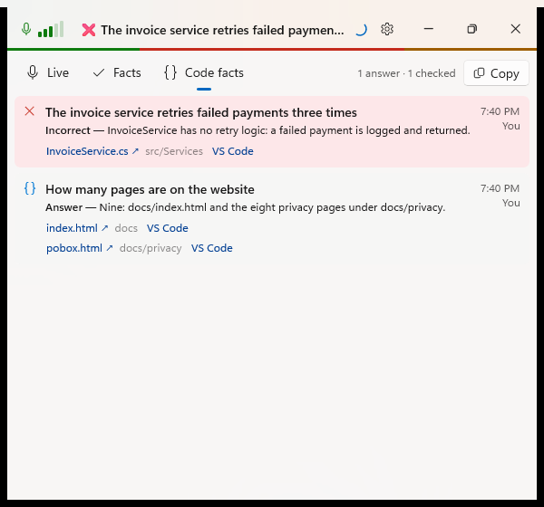
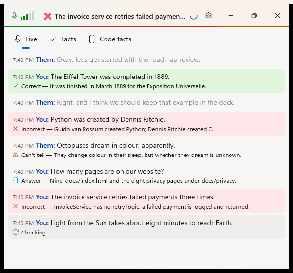
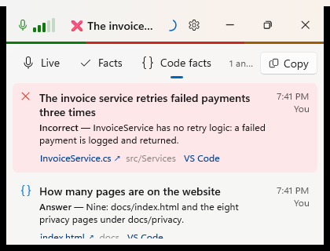

Code facts: questions about the code answered
Debug build with --demo and --demo --code, captured with PrintWindow. "Before" is the Facts page, where a claim naming a file was checked against it; "after" moves talk about the code to its own page, questions included.
Before: code claims on Facts
 1
1- Only a statement that named a file was checked; a question ("How many pages…?") was skipped.
After: a Code facts page

123- A third tab, with a count and Copy.
- A question gets an answer from the code…
- …with the files it rests on: each opens on GitHub or Azure DevOps, and in VS Code at the line.
After: on the Live page

1- The answer as a note under the question, marked with the code icon; a statement about the code is green or red as usual.
After: at the minimum size

1- The three tabs fit; the count shortens instead of wrapping.